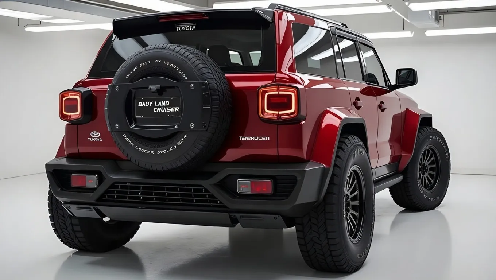

2026 Toyota Baby Land Cruiser Unveiled: Rugged Power & Ultimate Luxury on a Budget


As the automotive world shifts towards more affordable and efficient vehicles, a new contender has emerged to challenge the status quo. On a sunny day in April, Toyota unveiled its latest creation, a vehicle that promises to deliver rugged power and ultimate luxury without breaking the bank.
The timing of this unveiling is particularly noteworthy, as the global economy continues to grapple with inflation and rising production costs. With many consumers looking for ways to cut back on expenses without sacrificing quality, this new vehicle has the potential to resonate with a wide audience.
Table of Contents
What Happened — The Full Story
The 2026 Toyota Baby Land Cruiser is the result of years of research and development, as Toyota sought to create a vehicle that would appeal to a new generation of drivers. With its sleek design and impressive capabilities, this vehicle is poised to make a significant impact on the market. From its powerful engine to its luxurious interior, every aspect of the Baby Land Cruiser has been carefully crafted to provide an unparalleled driving experience.
But what really sets this vehicle apart is its affordability. In an era where luxury vehicles often come with hefty price tags, the Baby Land Cruiser promises to deliver high-end features at a fraction of the cost. This is made possible by Toyota's commitment to efficiency and cost-effectiveness, which has enabled the company to keep production costs low without sacrificing quality.
As the automotive industry continues to evolve, it will be interesting to see how the Baby Land Cruiser performs in the market. With its unique blend of power, luxury, and affordability, this vehicle has the potential to disrupt the status quo and challenge established players in the industry.
The Background You Need to Know
To understand the significance of the Baby Land Cruiser, it's essential to consider the context in which it was created. In recent years, there has been a growing demand for vehicles that are both rugged and luxurious, as consumers increasingly seek out experiences that combine adventure and comfort. The Baby Land Cruiser is Toyota's response to this trend, and it represents a significant departure from the company's traditional approach to vehicle design.
One of the key factors that has enabled Toyota to create such an affordable luxury vehicle is its use of existing platforms and technologies. By leveraging its extensive experience and expertise, the company has been able to develop a vehicle that is both innovative and cost-effective. This approach has also allowed Toyota to focus on the aspects of the vehicle that matter most to consumers, such as performance, comfort, and features.
Here's what changed: the way Toyota approached the design and development of the Baby Land Cruiser. By taking a more holistic approach and considering the needs of a new generation of drivers, the company has been able to create a vehicle that is truly unique and innovative.
Also Read
More Tech stories →Key Details and What They Mean
So, what exactly does the Baby Land Cruiser have to offer? Some of the key features include a powerful engine, a luxurious interior, and a range of advanced safety features. The vehicle also boasts an impressive towing capacity and a robust four-wheel-drive system, making it an excellent choice for those who enjoy outdoor adventures.
But that's not all - the Baby Land Cruiser also comes with a range of innovative technologies, including a state-of-the-art infotainment system and a suite of advanced driver assistance features. These technologies have been carefully integrated into the vehicle to provide a seamless and intuitive driving experience.
The numbers say otherwise - while the exact pricing of the Baby Land Cruiser has not been announced, industry insiders expect it to be significantly lower than that of comparable luxury vehicles. This could be a major factor in the vehicle's success, as consumers increasingly seek out affordable alternatives to traditional luxury brands.
Key Takeaways
- The 2026 Toyota Baby Land Cruiser promises to deliver rugged power and ultimate luxury at an affordable price.
- The vehicle features a range of advanced safety features, a powerful engine, and a luxurious interior.
- Toyota's use of existing platforms and technologies has enabled the company to keep production costs low without sacrificing quality.
Frequently Asked Questions
What is the 2026 Toyota Baby Land Cruiser?
The 2026 Toyota Baby Land Cruiser is a new vehicle that promises to deliver rugged power and ultimate luxury at an affordable price. It features a range of advanced safety features, a powerful engine, and a luxurious interior.
How much will the Baby Land Cruiser cost?
The exact pricing of the Baby Land Cruiser has not been announced, but industry insiders expect it to be significantly lower than that of comparable luxury vehicles.
What features does the Baby Land Cruiser come with?
The Baby Land Cruiser comes with a range of innovative technologies, including a state-of-the-art infotainment system and a suite of advanced driver assistance features. It also boasts an impressive towing capacity and a robust four-wheel-drive system.
When will the Baby Land Cruiser be available?
The Baby Land Cruiser is expected to be available in showrooms later this year, although an exact release date has not been announced.
Conclusion
The 2026 Toyota Baby Land Cruiser represents a significant shift in the automotive landscape, as consumers increasingly seek out affordable luxury vehicles that combine rugged power with advanced features and technologies. As the market continues to evolve, it will be interesting to see how the Baby Land Cruiser performs and how it challenges established players in the industry.
As we look to the future, one thing is clear - the Baby Land Cruiser is a vehicle that is worth watching. With its unique blend of power, luxury, and affordability, it has the potential to disrupt the status quo and create a new standard for the industry. Whether you're a seasoned off-roader or simply looking for a vehicle that can keep up with your active lifestyle, the Baby Land Cruiser is definitely worth considering.
Sarah Mitchell
Senior Tech Editor
Tech journalist with 8+ years of experience covering the latest in smartphones, EVs, AI, and consumer electronics. Bringing you accurate, well-researched stories from the world of technology.
Leave a Comment